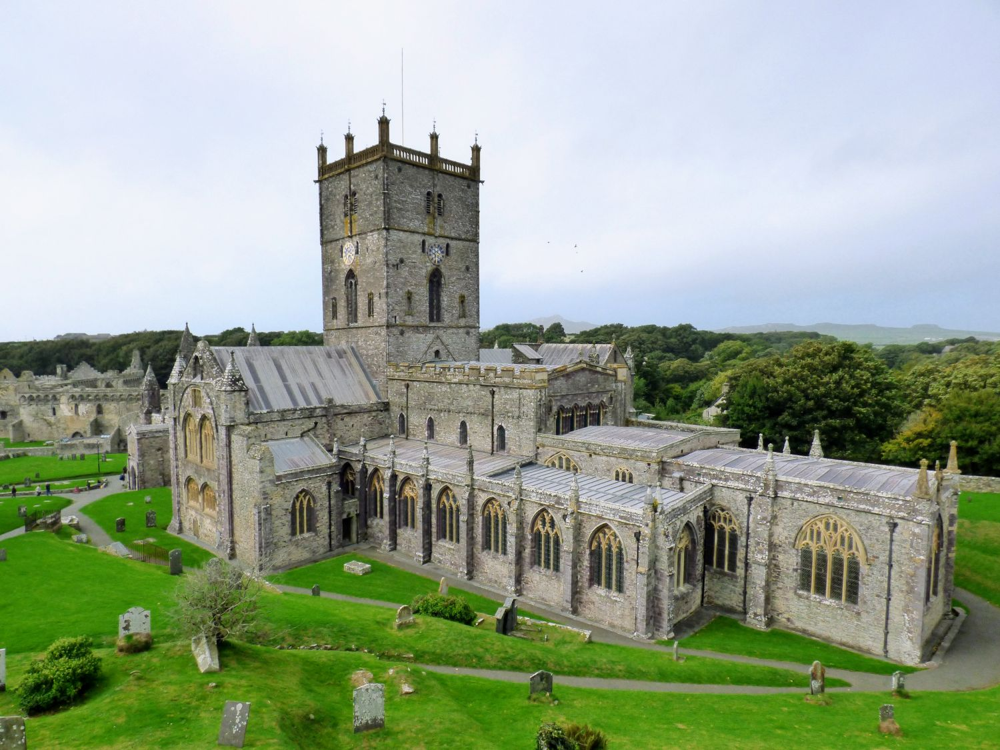

St Davids is a small city in Pembrokeshire, Wales. It is famous for its beautiful cathedral and its connection to the patron saint of Wales, Saint David.
Despite its small population, it was officially granted city status by Queen Elizabeth II because of its grand cathedral and its importance to Welsh culture. It is surrounded by spectacular coastal scenery and is a popular destination for hikers and nature lovers.
St Davids Cathedral is over 800 years old and is an important place of worship. Many visitors travel there every year.
The cathedral was built in a hidden hollow in the landscape to protect it from sea-raiders and historical invaders. Today, it features a magnificent purple stone exterior and an intricately carved oak ceiling.
